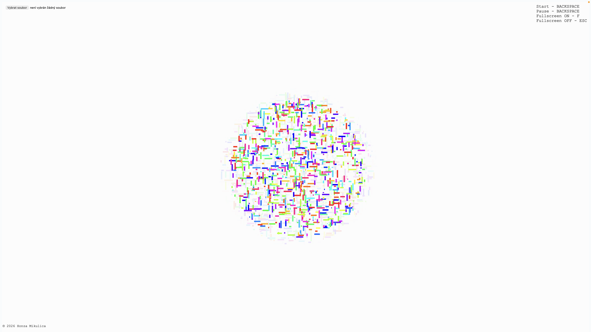

{kind=link}
{kind=link}
{kind=link}
{kind=link}
{kind=link}
{kind=link}
{kind=link}
{kind=link}
{kind=link}
{kind=link}
❮
❯
Dílo je věnováno A. Michaelu Nollovi a jeho dílu Computer Composition with Lines.
Dílo vzdává úctu jednomu z nejranějších děl generativního počítačového umění, Computer Composition with Lines od A. Michaela Nolla z roku 1964. Dílo, vytvořené pomocí generovaných černých linií a následně vytištěné, vědomě napodobuje Mondrianovu Composition with Lines. Stroj náhodně určoval pozice, délky a šířky vertikálních a horizontálních čar v rámci kruhové oblasti.
Projekt měl nejen estetický, ale i experimentální charakter. Noll zkoumal, zda účastníci dokážou rozlišit mezi Mondrianovým originálem a počítačem generovanou kompozicí. Pouze 28 % respondentů správně identifikovalo Mondrianovo dílo, zatímco 59 % upřednostnilo generovanou verzi. Dílo tak otevřelo debatu o estetické hodnotě počítačového umění, která přetrvává dodnes, nyní v souvislosti s umělou inteligencí.

Na tento historický kontext navazuje současný projekt, který autor realizoval v jazyce JavaScript. Vytvořil interaktivní plátno, na němž jsou generovány náhodné linie v rámci neviditelného kruhu. Po dosažení vizuálně věrné rekonstrukce byl projekt dále rozšířen o barevnou kompozici, která reflektuje možnosti dnešních technologií, jež v době vzniku originálu nebyly dostupné.
Další vrstvou se stala práce se zvukem. Vizuální prvky reagují na zvukovou stopu, detekci beatů i hlas, přičemž kruh pulzuje a linie dynamicky mění své vlastnosti. Dílo bylo rozšířeno o interaktivní prvky umožňující nahrání vlastního zvuku či využití mikrofonu, čímž se zvyšuje míra zapojení uživatele.
Výsledkem je pocta Michaelu Nollovi, která nepředstavuje pouhou rekonstrukci, ale rozvinutí původní myšlenky v kontextu současného digitálního a audiovizuálního umění. Původně statické dílo se proměňuje v dynamický systém, v němž se uživatel stává aktivním účastníkem a vstupuje do dialogu s algoritmem.
Dílo „RODINA pro všechny“ se věnuje tématům queer rodiny a hate kultury na sociálních sítích. Klíčovým vizuálním prvkem díla jsou dvě krabice, z nichž každá reprezentuje jiný aspekt tohoto problému. Jedna z nich symbolizuje nadějnou budoucnost a obsahuje fotografie autorovy fiktivní rodiny z budoucnosti, vytvořené pomocí umělé inteligence. Druhá krabice zobrazuje smutnou minulost, kterou ilustrují homofobní komentáře ze sociálních sítí a příklady diskriminace umělou inteligencí.
Fotografie byly vytvořeny prostřednictvím nástroje umělé inteligence Midjourney. Zobrazují smyšlenou budoucí rodinu autora – jeho děti Timmyho a Olayu, a také manžela. Autor však při jejich tvorbě narazil na zajímavý problém: umělá inteligence často nahrazovala dva otce kombinací jednoho otce a jedné matky, což naznačuje hluboce zakořeněné stereotypy v jejím fungování.
Homofobní komentáře byly sesbírány během jednoho semestru z platforem jako X, Instagram, TikTok a Facebook. Tyto komentáře byly záměrně vytrženy z původního kontextu, což odráží způsob, jakým mohou mladí queer lidé vnímat nenávistné projevy na internetu. Bez znalosti širšího kontextu se při čtení těchto zpráv zvyšuje jejich emocionální dopad a zdůrazňuje hrůznost samotného obsahu.
Jsme bytosti. Jsme lidé.
Chceme žít. Chceme milovat. A chceme být milováni.
Stvořeni k tomu žít život, který chceme.
Společnost bohužel však není jednotná. Rozdělujeme se.
Rozdělují nás předsudky a obavy. Rozděluje nás nenávist.
Mění nás v hlasitá monstra.
Strach z porážky. Strach z mýlení. Strach z nedokonalosti.
Odepíráme si sami. Je nám odepíráno.
Musíme se přiznávat celému okolí, svým blízkým, rodině, přátelům, kolegům, i neznámým lidem.
Jsme nuceni schovávat se a žít v normách.
Nejenom že ubližují nám. Ubližují i těm, jež neměli štěstí a jsou sami v péči pečovatelek.
Stejně jako my, chtějí mít rodinu. Rodinu protkanou láskou.
Získat štěstí.
Opečovávat život, ne jej omezovat.
Chceme být milováni. Chceme milovat. Chceme žít.
Jsme lidé. Jsme bytosti.
ESENCE PRAVÉ VYROVNANOSTI je dílo adaptující příběh z Taoismu, o tom jak císař hledal pravou vyrovnanost. Stejně tak to měl i autor díla, který se nedokázal v jistou chvíli řádně soustředit na svou práci, a tak zpracoval obrazy z příběhu dle své volné interpretace. Pro autora je tento projekt osobní záležitostí a silně věří, že toto dílo mu pomůže najít klid, vyrovnanost a koncentraci při dalším tvoření.
Projekt Ragnarök vyobrazuje scény z příběhu Ragnarök: konečný osud bohů, které jsou zpracovány za pomocí A.I. (Umělé inteligence) v programu MidJourney. Cílem bylo prozkoumat vizuál děl ze severské mytologie, které se do dnešní doby nedochovaly, nebo dokonce ani neexistovaly. To mohlo být způsobeno životním stylem Seveřanů, kteří byli nájezdníci a okupovali nová místa. První obrazové zmínky se objevují až v 19.století, čemuž můžeme vděčit tomu, že se příběhy přeložily ze staré norštiny do angličtiny, a tak pro umělce bylo možné příběhy zpracovat.
V rámci projektu autor zpracoval VR video, ve kterém se zobrazují finální díla vytvořená A.I. generátorem. Video se od finálního díla retrospektivně vrací zpět přes různé varianty děl, u kterých selektoval ze čtyř různých obrazových zdrojů. Díla doprovází texty, jež byly využity jako promt - zadání pro výsledek obrazu. V závěru se video obrací až na počáteční frázi, ze kterého vznikala první verze díla. Projekt končí nápisem příběhu Ragnarök, ze kterého plyne celá práce.
Záměrem tedy bylo spekulovat nad vizuální stránkou severského umění z dané doby a prozkoumání umělé inteligence, jakožto nástroj umožňující tvorbu děl z velké databáze obrazových zdrojů. Je zajímavé sledovat, jak si umělá inteligence poradí se zažitými jmény jako jsou Thor, Loki, Odin, které zpopularizovalo studio Marvel v jejich filmech o superhrdinském bohovi. Další varianta, která se jevila jako zajímavá, bylo zkoumání toho, jak si umělá inteligence poradí bez zmíněných jmen a pouze jenom s popisem děje a vložením tagu, že se jedná o severskou mytologii. Ve finále autor přišel na to, že jakožto rozený Čech, který nemá kořeny s danou kulturou, nemůže být ten, který bude reprodukovat díla na motivy severské mytologie, proto se projekt stává autorovou subjektivní selekcí tématu. A tak umožňuje A.I. generátoru tvořit na motivy ze severské mytologie, jelikož daný generátor má rozsáhlou databází od lidí různých kultur, a tak může být mnohem lépe propojený s kořeny severského národa.
☞ Celý projekt ☜
Dílo je věnováno A. Michaelu Nollovi a jeho dílu Computer Composition with Lines.
The author pays tribute to one of the earliest works of generative computer art, Computer Composition with Lines by A. Michael Noll from 1964. Created using generated black lines and subsequently printed, the work deliberately imitates Mondrian’s Composition with Lines. The machine randomly determined the positions, lengths, and widths of vertical and horizontal lines within a circular area.
The project had not only an aesthetic but also an experimental character. Noll investigated whether participants could distinguish between Mondrian’s original work and the computer-generated composition. Only 28% of respondents correctly identified Mondrian’s piece, while 59% preferred the generated version. The work thus opened a debate about the aesthetic value of computer-generated art, a debate that persists today, now in relation to artificial intelligence.
This historical context is followed by a contemporary project realized by the author in JavaScript. An interactive canvas was created in which random lines are generated within an invisible circle. After achieving a visually faithful reconstruction, the project was further expanded with a color composition that reflects the possibilities of today’s technologies, which were not available at the time the original work was created.
Another layer was introduced through the use of sound. The visual elements respond to an audio track, beat detection, and voice input, with the circle pulsating and the lines dynamically changing their properties. The work was extended with interactive features that allow users to upload their own audio or use a microphone, thereby increasing the level of user engagement.
The result is a tribute to Michael Noll that goes beyond mere reconstruction and instead develops the original idea within the context of contemporary digital and audiovisual art. The originally static work is transformed into a dynamic system in which the user becomes an active participant, entering into a dialogue with the algorithm.
The work FAMILY for All explores the themes of queer families and hate culture on social media. The central visual element of the piece consists of two boxes, each representing a different facet of this issue. One symbolizes a hopeful future and contains photographs of the artist's fictional family created with artificial intelligence. The other depicts a somber past, illustrated by homophobic comments from social media and examples of bias in artificial intelligence.
The photographs were generated using the AI tool MidJourney. They portray the artist's imagined future family—his children, Timmy and Olaya, along with his husband. However, the artist encountered an intriguing challenge during their creation: the AI frequently replaced two fathers with a combination of one father and one mother, revealing deeply ingrained stereotypes within its algorithm.
The homophobic comments were collected over a semester from platforms such as X, Instagram, TikTok, and Facebook. These comments were intentionally removed from their original context to reflect how young queer individuals may perceive hate speech online. Stripped of broader context, these messages amplify their emotional impact, underscoring the horror of the content itself.
We are beings. We are people.
We want to live. We want to love. And we want to be loved.
Created to live the life we choose.
Unfortunately, society is not united. We are divided.
We are divided by prejudice and fear. We are divided by hate.
It turns us into loud monsters.
Fear of defeat. Fear of being wrong. Fear of imperfection.
We deny ourselves. We are being denied.
We must come out to everyone around us — to our loved ones, family, friends, colleagues, even strangers.
We are forced to hide and live within norms.
Not only are we being hurt. Those who weren’t as lucky and are in the care of caregivers are being hurt too.
Just like us, they want to have a family. A family woven with love.
To find happiness.
To nurture life, not to restrict it.
We want to be loved. We want to love. We want to live.
We are people. We are beings.
THE ESSENCE OF TRUE TRANQUILITY is a work adapting the story from Taoism about how the emperor sought true equanimity. Similarly, the author of the piece experienced a moment when he couldn't properly concentrate on his work, so he processed images from the story based on his free interpretation. For the author, this project is a personal matter, and he strongly believes that this work will help him find peace, tranquility, and concentration in his future creative endeavors.
My project Ragnarök shows a couple of scenes from the story of Ragnarök: The Final Fate of the God. It was processed with the help of A.I. (Artificial Intelligence) in the program which is called MidJourney. The final goal of this project was to explore the visuals of works from Norse mythology that were not still in existence these days or were not known. This may have been due to the lifestyle of the Northerners who were the raiders who occupied new places. The first pictorial references did not appear until the 19th century. We would not know that if the translation of the old stories from Old Norse to English did not come out. After a while, the artists could begin to process the stories.
As a part of the project, I made a VR video showing the final works created by the A.I. generator. The video retrospectively goes back from the final work through different variants of the works, for which I selected from four different image sources. The works are connected with the texts, which were used as input for the result of the image. At the end, the video goes back to the opening phrase. Speaking of which the first version of the work was created due to the opening phrase. The inscription of the Ragnarök story ends the whole project at the final point.
The intention was therefore to speculate on the visual side of Nordic art from the period and to explore artificial intelligence as a tool enabling the creation of works from a large database of image sources. It was interesting to see how artificial intelligence deals with the names such as Thor, Loki, and Odin... popularized by the Marvel studio in their films about the superhero god. Another variant that seemed interesting was to investigate how the artificial intelligence would deal without the mentioned names and only with the description of the plot and the insertion of the tag of Norse mythology. Eventually, I realized that I, as a born Czech, who has no roots in the culture of Norse mythology, can not be the one who will reproduce works based on Norse mythology motives. Speaking of which, that is the reason why the project becomes my subjective selection of the topic. Moreover, I enable the A.I. generator to create motives from Nordic mythology, as the generator has an extensive database of people of different cultures, so there can be a much better connection with the roots of the Nordic nation.
☞ Project ☜